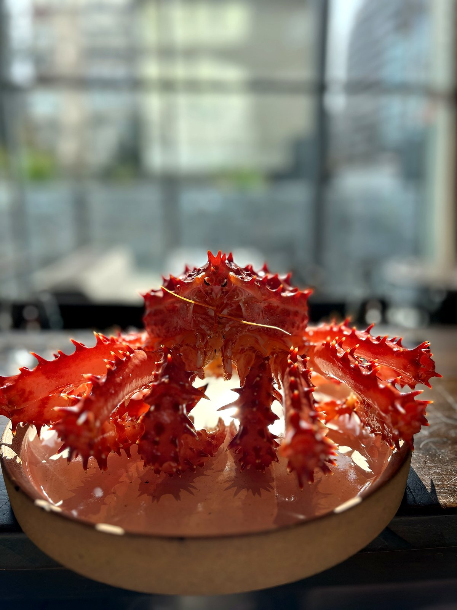
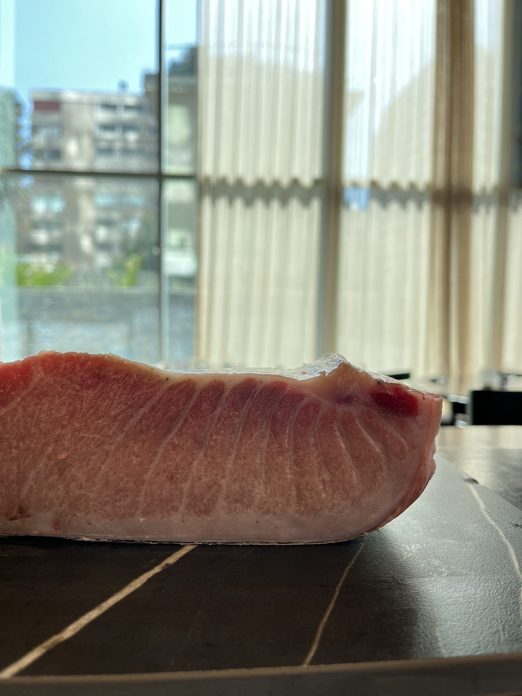
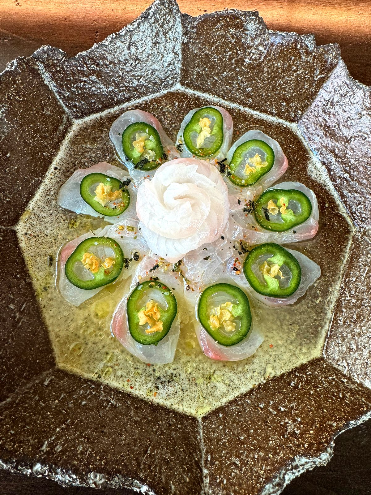
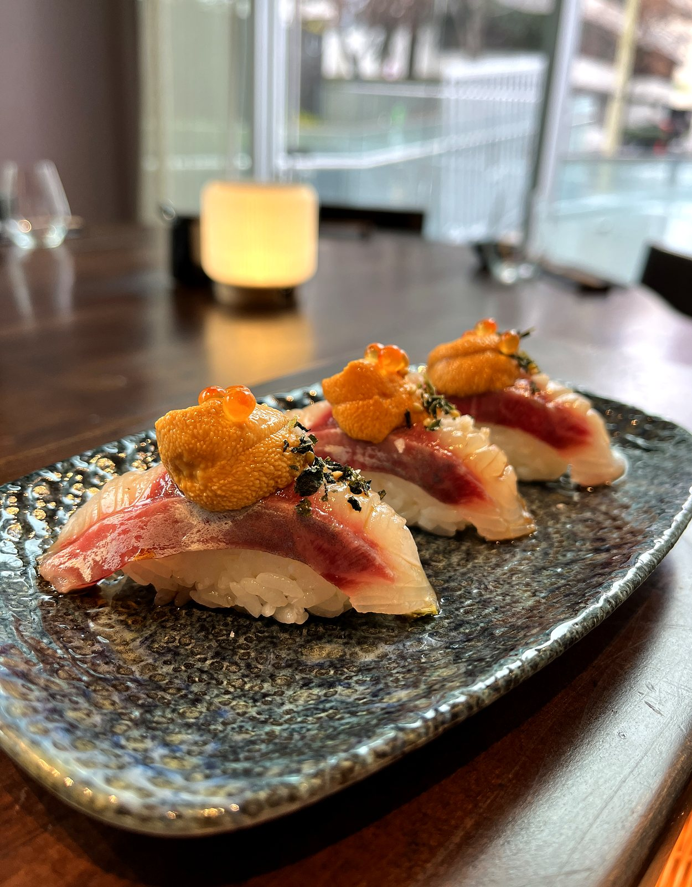
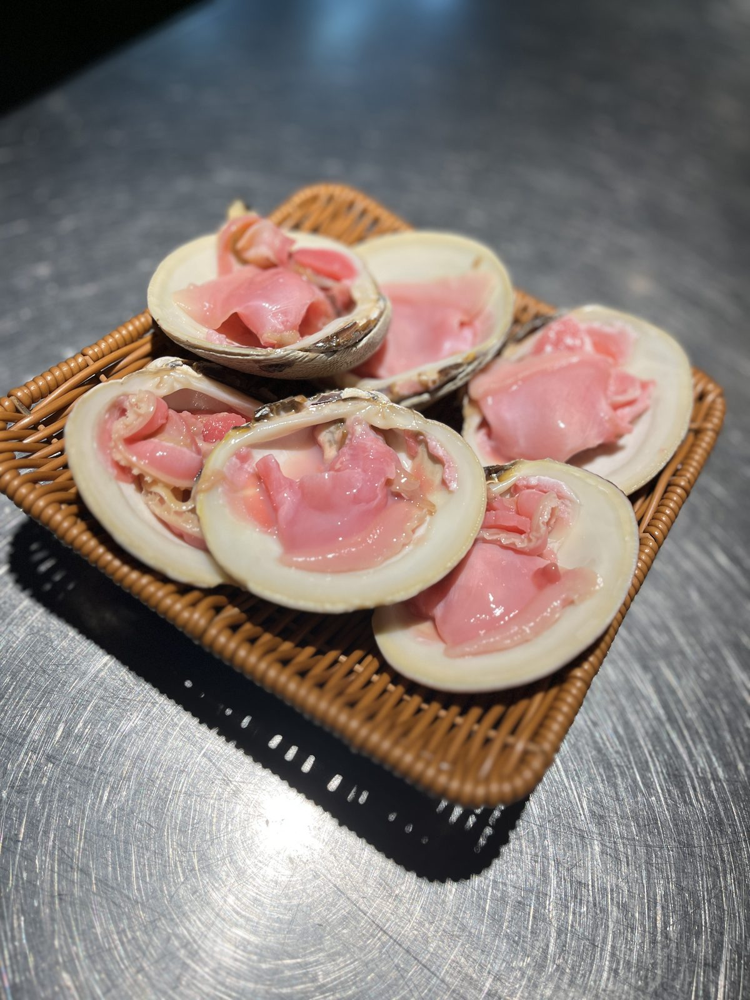

天
Descubrir
La leyenda
El Tengu es una criatura legendaria del folclore japonés — guardián de las montañas, protector del bosque, símbolo de fuerza, sabiduría y equilibrio espiritual.
Cada plato nace de esta filosofía: la precisión del maestro y la fuerza de la naturaleza, unidos en una ceremonia que honra la tradición japonesa pura.






La barra
La carta oficial
22 platos
14 platos
18 platos
21 platos
La barra
El ritual del sake
La selección de sake más completa de Chile. Cada variedad cuenta una historia: el terroir del arroz, el agua de montaña, la habilidad del Toji — el maestro cervecero.
Nuestro sommelier guiará tu experiencia hacia el maridaje perfecto con cada plato.
Reservas
Isidora Goyenechea 3000, local 104 · Las Condes
Reserva online
El sistema de reservas se abre en una nueva ventana para garantizar la mejor experiencia.
Abrir sistema de reservas ↗Completa los datos y te confirmamos en menos de 30 minutos.
Confirmación por WhatsApp en menos de 30 minutos
Ideal para grupos, eventos corporativos o solicitudes especiales.
Mar–Sáb 13:00–15:00 · 19:00–22:00 (última entrada) | Dom 13:00–15:00 | Lun cerrado
@tengu_restaurant
Isidora 3000 · Local 104
El Oráculo del Tengu
Pregúntame sobre la carta, el sake, los yokai o haz tu reserva.
El Oráculo responde de forma automatizada sobre la carta vigente · precios referenciales en CLP, confírmalos en el local · al usarlo aceptas recibir respuestas generadas por software